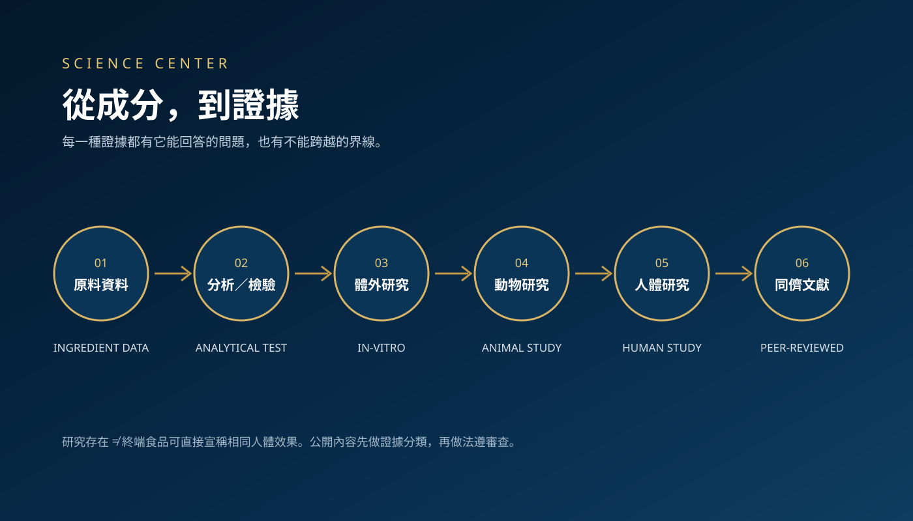

Evidence First
Science Center 的三個原則
先分類，再解讀
原料、體外、動物、人體與第三方檢驗是不同資訊，不互相取代。
先確認研究標的
研究的是單一原料、特定配方、終端產品，還是相似材料？這決定能推論到哪裡。
先法遵，再公開
即使研究本身成立，也要另外判斷是否能用於一般食品的公開宣傳。
Database
目前研究資料主題
網站依現有公司研發資料建立索引；未公開完整報告者，不虛構研究細節與結果。
米蕈真菌與培養技術
包含米蕈松露、裂褶菌、外泌體等研發資料與不同實驗模型。
複合植物配方研究脈絡
現有內部資料涉及代謝與腎臟相關動物模型；網站不把動物結果直接轉為人體疾病改善宣稱。
膠原與多元美妍原料
可整理原料與分析資料；任何人體外觀效果仍應依實際終端產品研究及適用法規審查。